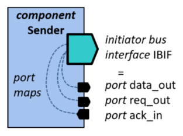
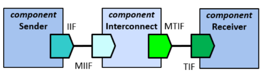

Bus interfaces editor
The bus interfaces editor displays a summary of the bus
interfaces of a component. A bus interface groups
ports together to form an interface that fulfills
requirements for a bus protocol. Connecting two matching
interfaces means connecting multiple ports (up to tens or even
hundreds of bits) together very easily. This editor is used to
add and remove bus interfaces in a component

Bus interface has a mandatory name and optional textual description.
Bus definition and abstraction definition columns display the VLNV-identifiers of the
IP-XACT documents that define qualities of the interface. These
fields must be set in the bus interface-specific editor.
Interface mode has 7 different choices (3 modes and 2
flavors of each, plus 1 extra):
- 1. Initiator initiates transactions, e.g. a write or read.
An initiator may have an address space which captures the programmer's view of the system.
- 2. Target responds to transactions, e.g. accepts the written value or provides the read value.
A target may have a memory map which captures information about the accessible registers inside this component.
- 3. System can be used for some interfaces that do not fit into the initiator or target category.
- 4-6. Mirrored initiator, mirrored target, mirrored system are the mirrored versions of the
above modes.
They have similar ports as normal interfaces, but the directions of the ports are reversed.
For example, if an initiator interface has data
output, then a mirrored initiator has data as input.
It is not allowed to connect to mirrored interfaces together.
The main usage of mirrored interfaces is at bus interconnects, such as AMBA AHB/APB or HIBI,
since they allow constructing a memory map of the whole system, whereas regular IP
components mainly utilize direct interfaces.
- 7. Monitor is an interface that can be used for verification process.
It gathers data from other interfaces, i.e. non-intrusive observation and hence all logical port are inputs
IP-XACT allows three kinds of connections
- Direct initiator to target: Point-to-point connection. Complex cases require using bus interconnect
component containing bridge(s), such as multillayer AHB bus.
- Direct-mirrored: initiator to mirrored initiator, mirrored target to target, system to mirrored system.
Point-to-point connection. Complex cases require using bus interconnect component containing
channel(s)
- Monitor: any type except monitor to monitor. Many monitors can be connected to single interface
EXAMPLE. Component Sender writes data through its initiator interface IIF to
mirrored initiator interface MIIF in interconnect. On the receiving side,
interconnect's mirrored target interface MTIF writes the data to
Receiver's target interface TIF.
